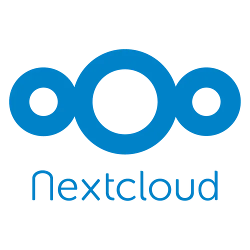

Travail Collaboratif — NextCloud & LDAP
Mission 1 — 2ème Année BTS SIO - Semestre 1
1ère Année
2ème Année
Travail Collaboratif — NextCloud & LDAP
Cette deuxième année de BTS SIO apporte avec son premier AP la notion de binôme permanent. Pour inaugurer cette collaboration avec mon coéquipier, une mission de type "Travail Collaboratif" a été mise en place. Elle se divise en plusieurs parties : recherche et documentation sur différentes solutions logicielles (Teams, Nextcloud…), puis configuration du protocole LDAP pour la gestion d'utilisateurs sur un serveur Windows afin de leur donner accès à une interface NextCloud dans le contexte d'une agence immobilière fictive HSH (Home Sweet Home).
📋 Cahier des charges
- Se renseigner sur les solutions de travail collaboratif (Teams, Nextcloud…)
- Apporter un comparatif de ces solutions pour en choisir une finale
- Mise en place d'un serveur FEDORA avec interface NextCloud
- Paramétrage du LDAP pour le partage de profils utilisateurs sur NextCloud
- Créer un tutoriel d'installation de la machine serveur et de NextCloud
- Créer des groupes avec certains profils utilisateurs
- Donner accès à un utilitaire de type agenda pour la création de réunions
- Permettre le partage de ressources via un dossier commun
- Garder trace du temps via des plannings
- Créer un schéma Visio de l'infrastructure réseau actuelle

✅ Rendu & tâches effectuées
- Création de la machine FEDORA et de son interface NextCloud
- Création de tutoriels d'installation et de configuration NextCloud/LDAP
- Rendu des documents comparatifs sur les solutions collaboratives
- Rendu des plannings réels et prévisionnels
- Rendu du schéma Visio de l'infrastructure réseau

Points Forts
- ✅ Paramétrage du serveur FEDORA réussi
- ✅ Affectations et paramétrage de NextCloud (hors LDAP) fonctionnels
Points Faibles
- ⚠️ Difficulté à paramétrer le LDAP et NextCloud (nouveauté et complexité)
- ⚠️ Rendu des plannings via Vikunja
Avis Personnel
Cette première mission de 2ème année trace vraiment une grande ligne entre la première et la deuxième année de BTS, par la quantité de concentration nécessaire à la mise en place de la solution NextCloud. Même si cette mission s'est avérée assez compliquée, avec un peu de recul ses configurations — que ce soit via l'interface physique de NextCloud ou par ligne de commande — montrent une interface fonctionnelle assez satisfaisante à contempler.